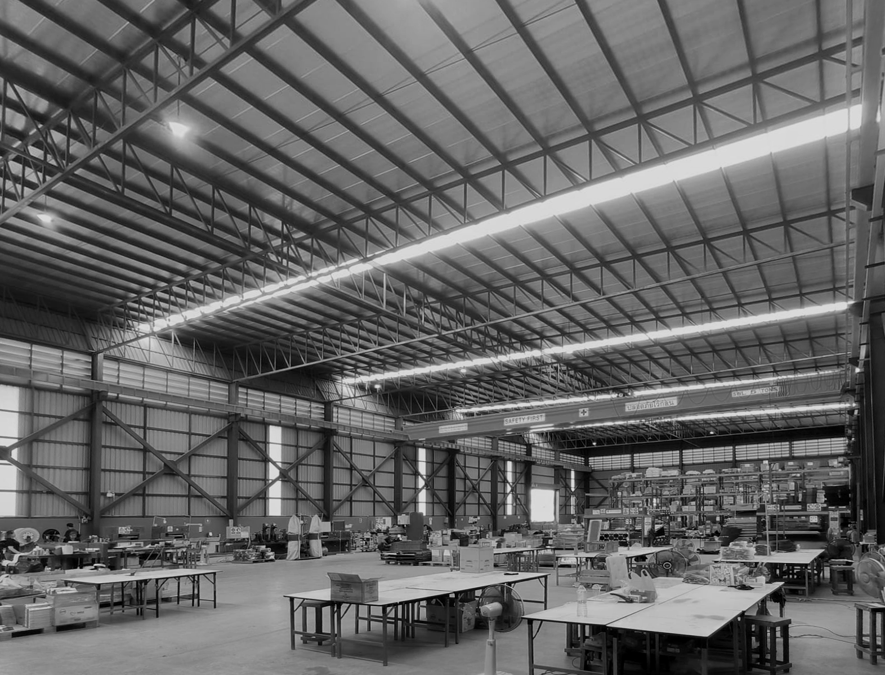

SANDING. PERFECTED.
High-performance sandpaper for construction, manufacturing, and professional finishing.

Quality management systems you can depend on

Reliable production & inventory

Delivers exceptional resistance to wear and high cutting performance
Launched in 2025 by industry veterans Kasper Madsen and Jens Olsen, M&O combines decades of global expertise in abrasives. Born from a desire to redefine standards in the DIY and professional markets, M&O delivers cost-effective, high-performance abrasives that elevate expectations. Backed by Danish ownership and a culture of precision engineering, M&O focuses on developing abrasives that combine reliability, durability, and consistent performance.
Drawing on decades of hands-on industry experience, the team works closely with manufacturers and professionals to refine every detail, from grain selection to bonding technology. The result is a portfolio of abrasives designed to deliver smooth finishes, longer lifespan, and dependable results for both demanding professionals and dedicated DIY users worldwide.


M&O has rigorously researched the optimal combination of abrasive and backing materials to deliver superior sanding results at a competitive price. The flexible latex backing empowers tradesmen and DIY enthusiasts with a durable, versatile tool built for the toughest jobs.
Request a Quote


Black is the color of luxury, performance, professionalism, and high-end technology (think premium brands like Apple, Nike, or luxury cars). It conveys strength, durability, and sophistication. Our packaging implies a modern, streamlined, and effective design.
Hardware store shelves are a sea of colors—yellows, reds, browns, and dull oranges. They are functional but visually noisy and undifferentiated. The M&O Advantage: A stark black-and-white package creates maximum visual contrast. It acts like a visual "silence" in a room full of noise, immediately drawing the eye.
The lifespan depends on the material and application, but our abrasives are designed to maintain cutting efficiency for longer compared to standard products, reducing downtime and improving overall productivity.
Our sanding discs are designed to be compatible with most standard tools and machines. We recommend checking the size and attachment type to ensure optimal performance and safety.
Lower grit numbers (40–80) are ideal for heavy material removal, while medium grits (100–180) are used for smoothing surfaces. Higher grits (220 and above) are best for fine finishing and polishing. Choosing the right grit depends on your material and the desired finish.
Our abrasives are engineered using high-quality grains and advanced bonding technologies to ensure consistent cutting performance and longer lifespan. This means faster results, fewer replacements, and a more reliable finish across a wide range of applications.
Our team is here to help.
The most cost-effective coated abrasive solutions on the market: quality-certified, ISO-compliant, and reliably delivered.

© 2026 Madsen & Olsen Co., Ltd. All rights reserved.
Privacy Policy